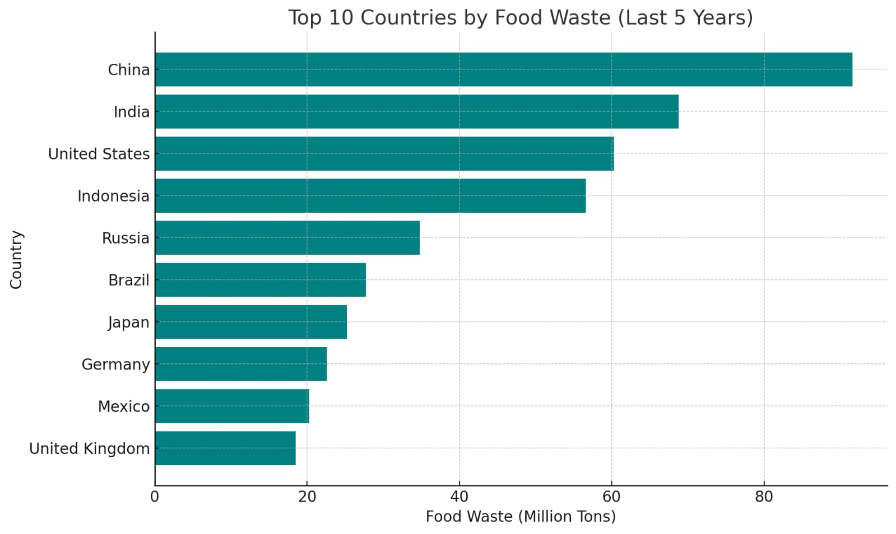

Fight Against Food Wastage

Every year, millions of tons of food are wasted across the globe. From production and transport to retail and consumption, vast amounts of edible food end up in landfills instead of on plates. Food wastage not only squanders resources but also contributes to environmental pollution, including greenhouse gas emissions and loss of biodiversity.
Food Wastage Facts
| Region | Annual Food Waste (in Million Tons) | Percentage of Total Production |
|---|---|---|
| North America | 79 | 25% |
| Europe | 88 | 20% |
| Asia | 143 | 31% |
| Latin America | 39 | 15% |
At Stop Food Wastage, we are dedicated to raising awareness about this critical issue and educating people on ways to reduce waste. By understanding the causes, impacts, and solutions, we can all play a part in creating a sustainable future.
Explore our website to learn more about the many faces of food wastage, and discover practical ways to make a difference. Together, we can work towards a world where food is valued, resources are preserved, and waste is minimized.
